voxbox · the lego tray
A stand from bricks
Build it a Lego tray
A tray of ordinary Lego bricks that holds the VOXBOX at a tilt: 50 parts, seven steps.
Built once. I put a prototype together from loose bricks on 15 November 2026 and it worked well. That is one build, from the bricks I had, not checked brick for brick against the list; a photo and a short film are below. Its sizes are read from photos of the real box, not taken with a ruler, and the tightest gap is 1.2 mm, so try the fit with the real boards at step 4.
The picture is the right way up. The boards sit in the tray with their cables out of the back. The VOXBOX's program has turned its picture and its touch to suit since test 15, and since test 18 every page of its own keeps clear of the brick that covers the screen's right edge. Today's download has both.
Download the modelShopping list
voxbox-lego-tray.ldr, an LDraw file, 2,715 bytes. It opens in BrickLink's free Studio; how is in the small print below. The shopping list is the same 50 parts as a BrickLink wanted list in the drawing's colours, 1,497 bytes; how to use it is below the steps.
- 13 × 10studs across, 104 × 80 mm
- 11 × 7studs of pocket, 88 × 56 mm
- 50parts, 14 kinds
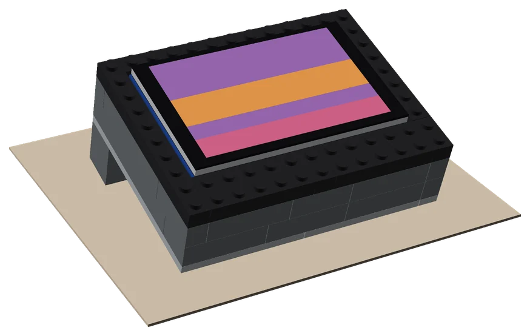
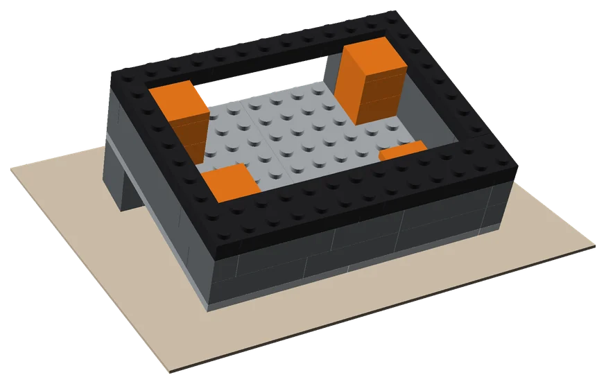
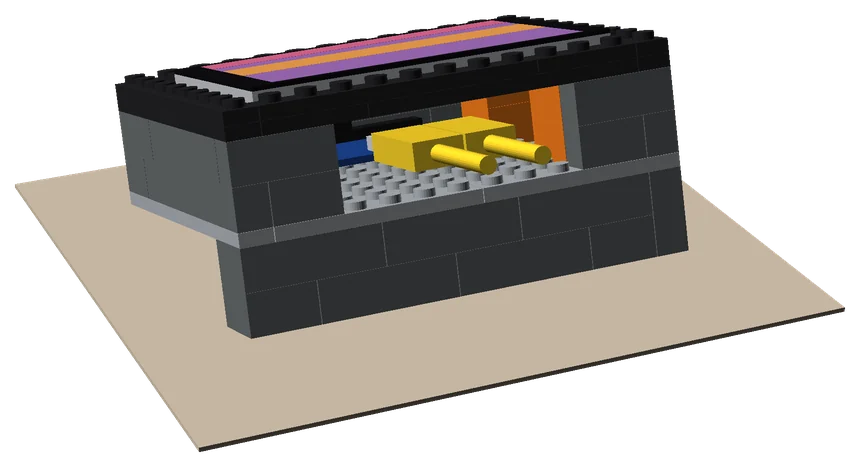
The first one, built
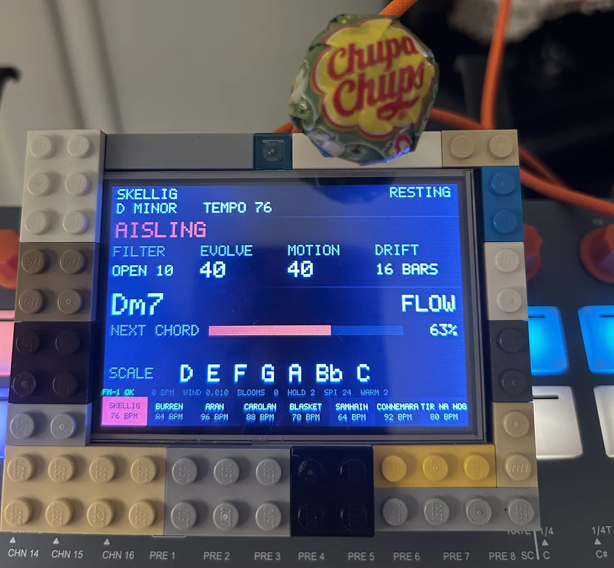
Seven steps
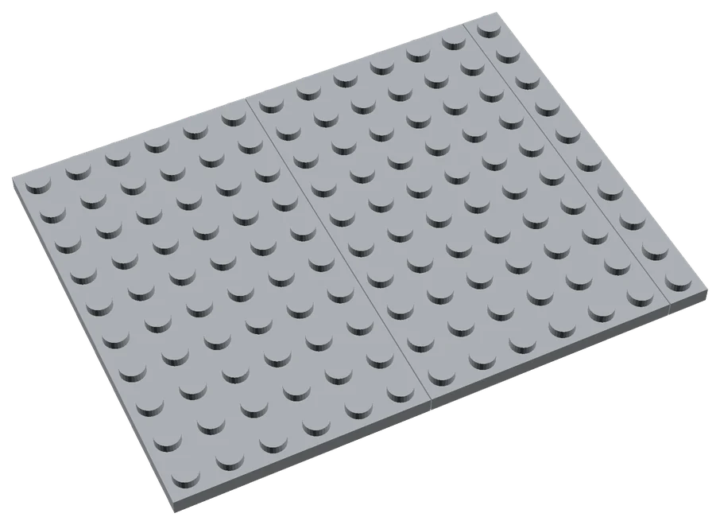
The floor2 × Plate 6 × 10, 1 × Plate 1 × 10.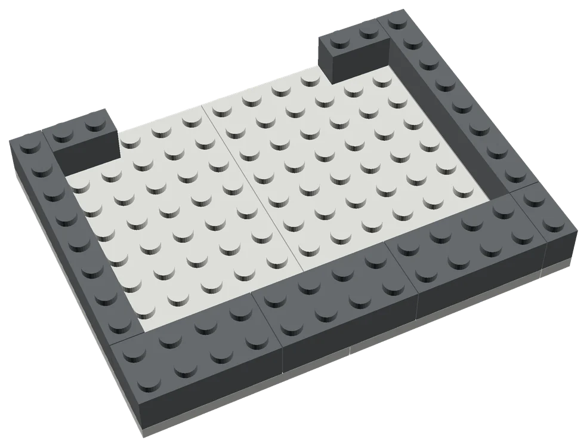
The first course of the wall3 × Brick 2 × 4, 3 × Brick 1 × 2, 2 × Brick 1 × 8.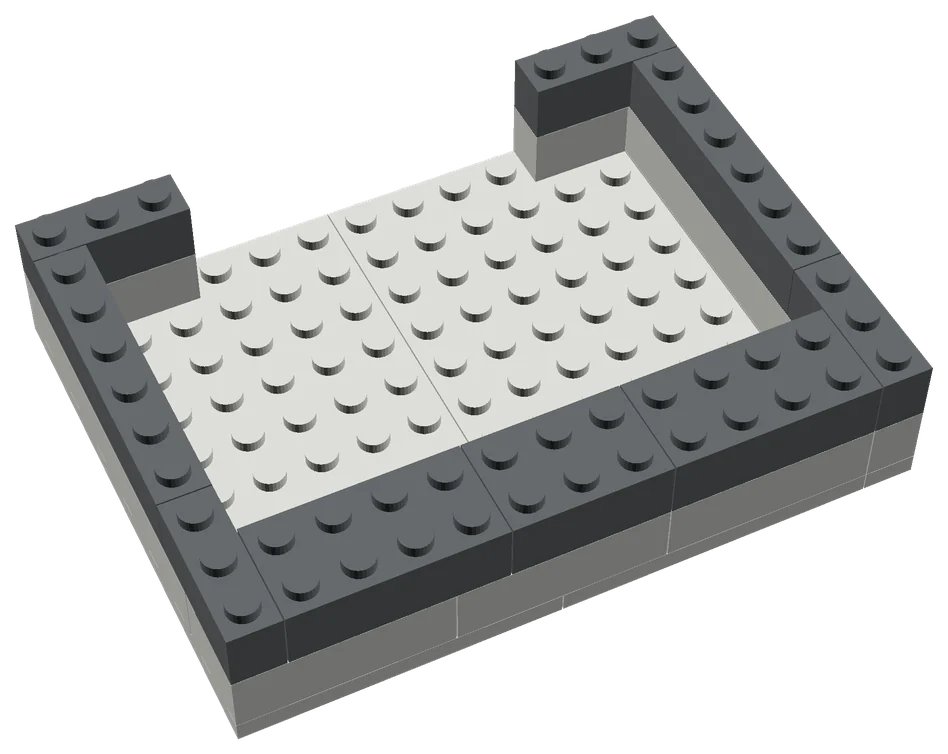
The second course4 × Brick 1 × 3, 2 × Brick 2 × 4, 1 × Brick 2 × 3, 2 × Brick 1 × 6.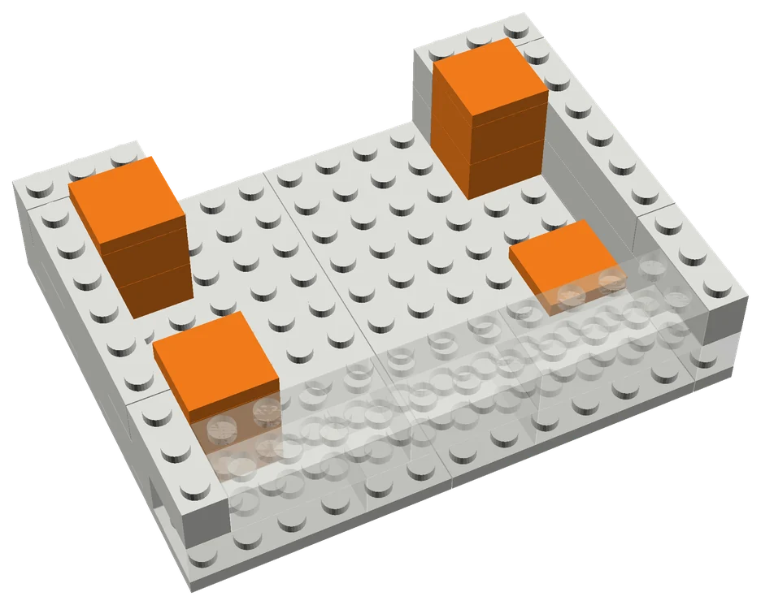
Three pillars and the stop6 × Brick 2 × 2, 4 × Tile 2 × 2. Try the two boards in the pocket here, before the wall's plates go on. If the pins touch the floor, add one Plate 2 × 2 under each pillar's tile.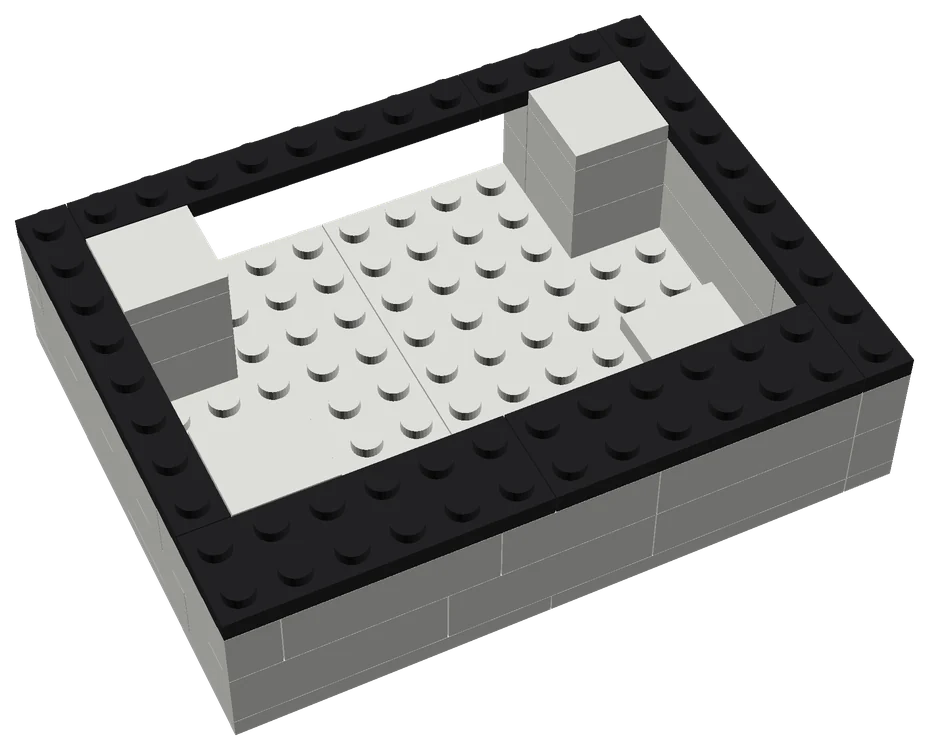
The first layer of plates on the wall2 × Plate 2 × 6, 1 × Plate 1 × 10, 2 × Plate 1 × 8, 1 × Plate 1 × 3.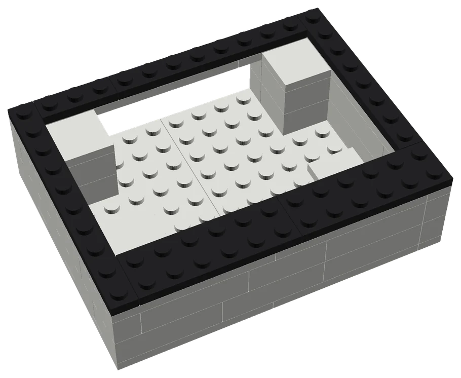
The second layer of plates1 × Plate 1 × 10, 2 × Plate 2 × 6, 2 × Plate 1 × 8, 1 × Plate 1 × 3.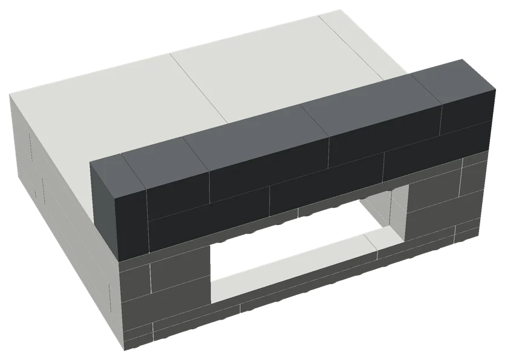
The foot under the back edge5 × Brick 2 × 4, 2 × Brick 2 × 2, 1 × Brick 1 × 2 × 2.
Buying the bricks
The shopping list, voxbox-lego-tray-bricklink.xml, is not a file to open and read. It is the parts list in the form that BrickLink, the marketplace for Lego parts, takes: paste it in and the 50 parts are on a wanted list in your account, with nothing typed by hand.
- Press Shopping list above; the file lands in your downloads.
- Open it in a plain text editor (TextEdit on a Mac, Notepad on Windows), select all of it and copy.
- Sign in at bricklink.com. An account is free.
- Open Wanted, then Upload, then the tab Upload BrickLink XML format.
- Paste into the box and press Proceed to verify items. BrickLink shows 16 lines, each with its picture, name, colour and quantity. Nothing is added yet.
- Press Add to Wanted List.
- Wanted's Buy tab then looks for shops that hold the parts between them. You pay those shops, and postage to each.
LEGO is a trademark of the LEGO Group, which does not sponsor or endorse this.
How the tray was designed
Written as code, opened in Studio
Nobody dragged these bricks into place. The tray is a short Python script that puts 50 parts on a grid and says so if one of them floats.
1. Sizes from photos
There was no ruler to hand, so the box was photographed side on and measured against its own header pins, which are 2.54 mm apart. Measured that way the small board came out at 65.2 mm against its real 65.0, and two photos agreed to about half a millimetre.
The first design guessed 14 mm under the screen's board and 7 mm above it. The photos said about 19.5 mm and 4.6 mm, so the second design, the one here, has pillars one plate taller.
2. A grid, and one line a part
Lego is already a grid. The tray is 13 studs across and 10 deep, and heights are counted in plates of 3.2 mm, with a brick three plates high. Each part is one line: the step it is built in, its number, the column and row of its corner, its level, its colour.
put(2, "3008", 0, 2, 1, 72, "z") # step 2, a Brick 1 x 8, dark grey
The whole tray is 41 such lines, some of them in loops.
3. Out come the files
The script writes the LDraw file with its seven steps, the BrickLink wanted list and the parts table on this page, then runs its checks and ends "checks: all passed" or lists what failed. It also writes the scenes for the drawings above, which were drawn with OpenSCAD from the same list of parts: they are not Studio's pictures.
4. Into Studio
BrickLink's Studio imports the LDraw file (File, Import, Import LDraw File). Studio 2.26 knew all 14 kinds of part, gave no list of errors, and showed the seven steps. Studio was used to look at the model, turn it and step through it. Nothing was built or moved in it, and its collision and stability checks have not been run.
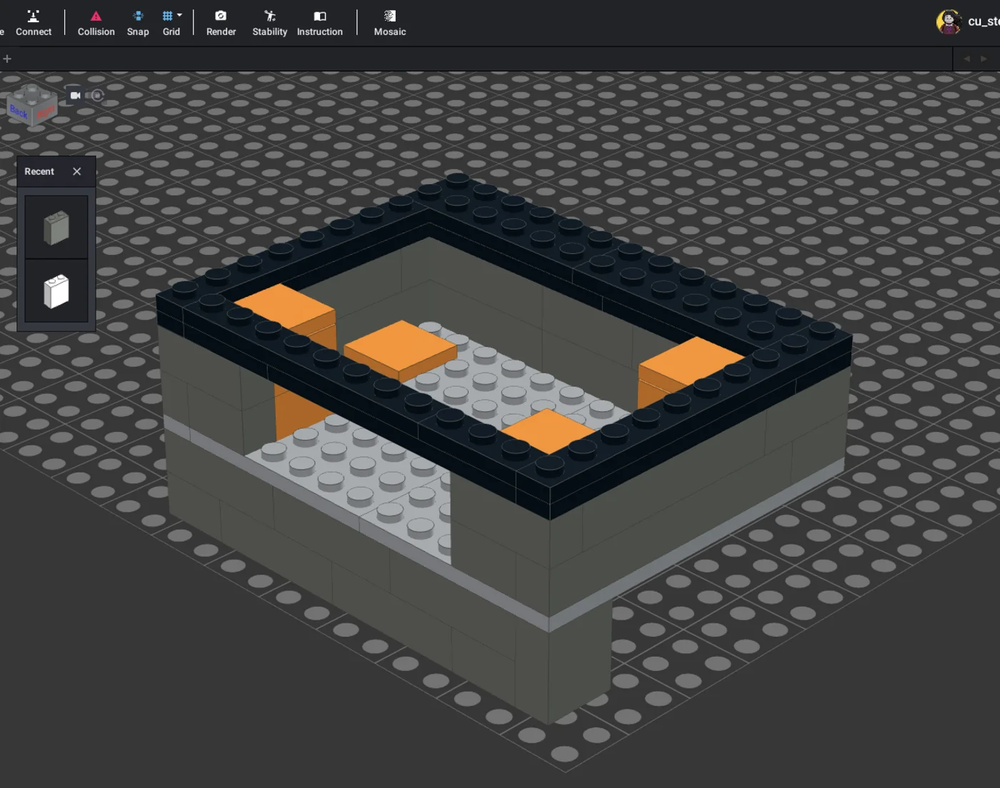
5. Then real bricks
The prototype of 15 November sent two things back. Its foot stopped a stud short of the left edge, so a tall Brick 1 × 2 × 2 went in there, and into the script. And in the tray a brick covered the right end of the strip along the bottom of the screen; that was put right in the screen's program, in a later build than the ones on this page, not in the bricks.
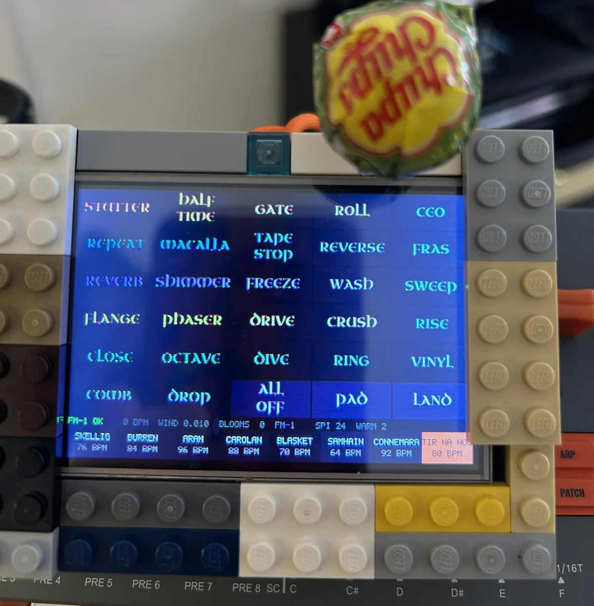
What the script checks
- Nothing overlapsNo two parts in the same cell, and none off the 13 × 10 grid.
- Everything is heldEvery part is joined by studs, through the others, to the floor. Nothing sits on a tile.
- It can be builtIn the steps' order, each part has something already there to press on to.
- The floor is one pieceNo holes, and both seams between its plates are crossed above and below.
- The pocket is clear11 × 7 studs with only the three pillars and the stop in it.
- The cables get outA gap in the back wall, clear for both courses of bricks, high enough for a USB-C plug.
- The wall is levelEvery cell of the border reaches the same height, but for the gap.
- The boards fitWith the measured sizes: pin tips 1.2 mm clear of the floor's studs, glass 1.3 mm over the wall's.
What it does not know: how hard real bricks grip, or whether the tilt is steady under a pressing finger. One built tray says yes to both.
Take it and change it
The scriptThe modelThe Studio fileThe drawings' script
- The script needs Python 3 and nothing else.
python3 voxbox_lego.py outwrites the model, the wanted list and the parts table into a folderout, and ends "checks: all passed". - For another board, change the sizes at
SIZESand the pillars' height and places. For another shape, change theputlines. - Run it again. If a brick floats, overlaps or leaves the boards no room, it ends "FAILED" and says which part and where. The files are written all the same, so do not build from them until it passes.
- Import the new
.ldrinto Studio to see it, and to send its parts to a wanted list.
voxbox-lego-tray.io, 161,692 bytes, is the same 50 parts saved from Studio 2.26, for opening there without an import. voxbox_lego.py, 17,353 bytes; voxbox_lego_render.sh, 1,915 bytes, which also needs OpenSCAD, Pillow and numpy and is only for the drawings. Both are under the GPL, version 3, like the rest of AISLING. Run as it is here, the script writes the very model on this page, byte for byte.
The tray's parts 50 bricks, plates and tiles
| How many | Part | LDraw number |
|---|---|---|
| 10 | Brick 2 × 4 | 3001 |
| 2 | Brick 1 × 8 | 3008 |
| 1 | Brick 2 × 3 | 3002 |
| 2 | Brick 1 × 6 | 3009 |
| 8 | Brick 2 × 2 | 3003 |
| 4 | Brick 1 × 3 | 3622 |
| 3 | Brick 1 × 2 | 3004 |
| 1 | Brick 1 × 2 × 2 | 3245b |
| 2 | Plate 6 × 10 | 3033 |
| 4 | Plate 2 × 6 | 3795 |
| 3 | Plate 1 × 10 | 4477 |
| 4 | Plate 1 × 8 | 3460 |
| 4 | Tile 2 × 2 | 3068b |
| 2 | Plate 1 × 3 | 3623 |
The tray is drawn around sizes read from photos of the real box, scaled by its 2.54 mm pin spacing and good to about 0.7 mm; none has been checked with a ruler. The screen's board is 85.5 × 56 mm, its nominal size. Under it, the small board's face is 17.9 mm down and the tips of its soldered pins 19.5 mm; above it, the glass is 4.6 mm up.
On pillars of 22.4 mm the pin tips clear the floor's studs by 1.2 mm, which is about the size of the measuring error. If they touch, one Plate 2 × 2 under each pillar's tile lifts the boards 3.2 mm. The glass stands about 1.3 mm above the wall's studs. The tile on the floor carries nothing: it sits 1.3 mm under the small board and stops that corner dipping when the screen is pressed.
Buying the tray's bricks a BrickLink wanted list
There is no kit to buy yet. The steps for using the shopping list are under the tray's seven steps; these are its details.
The list asks for each part in the colour it is drawn in: light bluish grey for the floor, dark bluish grey for the wall's bricks and the foot, black for the wall's plates, orange for the pillars and the stop. That makes 16 lines for 14 kinds of part, as two kinds come in two colours. No colour matters to the fit; change any of them on BrickLink's check page or in the wanted list, to whatever is cheap or to your taste. It asks for new or used alike. BrickLink calls the 2 × 2 tile 3068, where the model and the parts list above say 3068b; they are the same tile. BrickLink took the first 15 lines on 15 November 2026, as far as step 5; the sixteenth, the Brick 1 × 2 × 2 (BrickLink's 3245b), was added afterwards and checked only against BrickLink's catalogue, which lists it in dark bluish grey; I did not add it or go on to buy, so steps 6 and 7 are as BrickLink names them, not tried. The prices, the postage and the sale are between you and BrickLink's shops; I take no part in them and earn nothing from them.
Opening the tray in Studio the file, its steps, its parts
- Install Studio 2.0 from BrickLink. It is free.
- File, Import, Import LDraw File, and choose voxbox-lego-tray.ldr. Plain File, Open lists only Studio's own .io files.
- The Step List panel shows the seven steps; clicking one shows the model built up to there.
- To turn the view, hold the right mouse button and drag. Scroll to zoom. To turn a part, select it and press the arrow keys.
- Model Info lists the parts, and can send them to a BrickLink wanted list.
The file opened in Studio this way on 15 November 2026; the menu and panel names are as remembered, not checked. Studio shows only the Lego, and its collision and stability checks have not been run on this model.